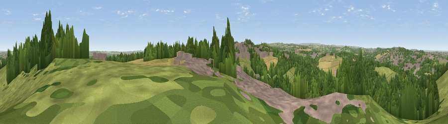

Viewpoint near Blacker Hill
#20344 in England · top 29% of its area beats it · near Blacker Hill · path 84 mWhere it is
The exact computed spot (SE 36825 02325). Click the marker for map links.
Public access: the nearest public right of way is about 84 m away — the final stretch may cross private land. Computed from Natural England's CRoW access layer and OpenStreetMap rights of way — not the legal definitive map. Always verify locally.
The view, rendered

A 360° render of this exact spot computed from the terrain model, tree cover and land cover — summer colours, afternoon light, calibrated against photographs of famous viewpoints. Real trees, hedges and buildings will differ in detail.
The panorama
Grey silhouette: terrain skyline in each direction (720 bearings, Earth curvature and refraction included). Dashed green: skyline with trees (+15 m) and buildings (+8 m) as obstacles. Blue strip: how far the ground is visible on each bearing.
Where the view opens
Wedge length = distance to the farthest visible ground on that bearing (vegetation-aware). Rings at 10, 25 and 50 km.
What fills the view
40% woodland · 35% grassland · 14% built-up · 11% cropland
Angular shares of the visible panorama (visual magnitude), not map area. Landscape diversity 0.55 (0–1 Shannon).
Key numbers
More beautiful places nearby
The staircase of upgrades: each row has a higher view potential than everything closer. Driving times are estimates from straight-line distance, calibrated against real road routing — check an actual route before setting out.
| Place | Direction | Drive | Score |
|---|---|---|---|
| Stone Circle | NNE · 0 km | ~1 min | 52.6 |
| Hoyland Lowe | SSW · 1 km | ~4 min | 64.5 |
| Viewpoint near Wharncliffe Side | SW · 8 km | ~16 min | 75.0 |
| Viewpoint near Wharncliffe Side | SW · 8 km | ~16 min | 75.2 |
| Viewpoint near Greenfield | W · 37 km | ~55 min | 76.0 |
| Viewpoint near Carrbrook | W · 38 km | ~57 min | 77.1 |
| Viewpoint near Otley | NNW · 45 km | ~65 min | 77.5 |
| Viewpoint near Mow Cop | SW · 68 km | ~91 min | 78.9 |
53.51632, -1.44611 · source: screening · position refined by local search. Computed location — check access rights before visiting.